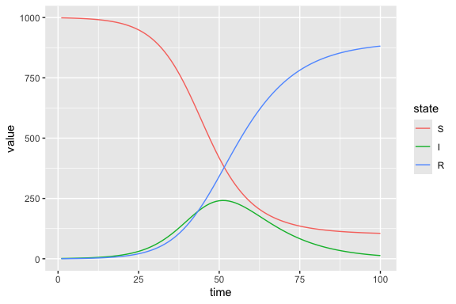
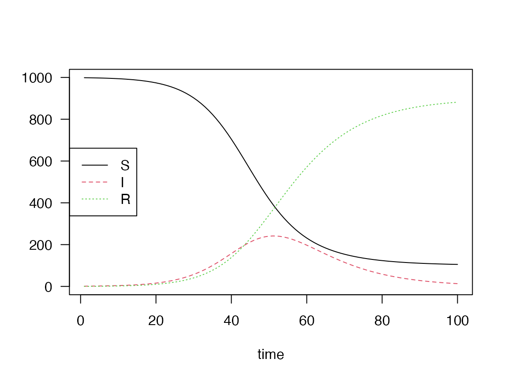

Engine-Agnostic Model Specification Grammar
Source:vignettes/engine_agnostic_grammar.Rmd
engine_agnostic_grammar.RmdOne of the main goals of macpan2 is to provide a
flexible grammar for model specification that reduces friction when
building upon and expanding an existing model. This goal complements the
standard approach of modelling, which is to start simply and add
complexity as needed.
There is a trade-off between the flexibility and the simplicity of the model grammar: specifying a simple model may not always be very concise, and there is a learning curve to the model grammar. However, it can be very powerful when it comes to specifying structured models, especially when they are cast as expansions of simple models. Such structured models can include:
- multiple pathogen strains
- multiple infection types (e.g., asymptomatic and symptomatic or mild and severe)
- age-structure
- multiple locations (a metapopulation model)
- testing processes to identify infections
- vaccination status
This vignette seeks to explain macpan2’s model
specification grammar and in particular how one could take a simple
model and expand it with additional structure.
Amuse bouche: a structured SIR model
A key to macpan2’s flexible model grammar is the use of
functional forms to repeat the same kinds of
calculations across model structures. For instance, consider an SIR
model that has two pathogen strains (without co-infections):

Here,
- , , and are the numbers of individuals that are susceptible, infected with strain ( or ), and recovered, respectively,
- is the total population size,
- is the transmission rate for strain ,
- is the recovery rate for infected individuals,1
- is the force of infection for strain .
We can cast this model as a system of difference equations, since this is how we will iterate them numerically in our simulation:
Each force of infection, and has the same functional form, that is, using an expression like . When numerically simulating this model, it doesn’t take much effort to write out each calculation separately as something like:
lambda.A = beta.A * I.A / N
lambda.B = beta.B * I.B / NHowever, in macpan2, we can specify a single functional
form for it, for instance
lambda = beta * I / Nand then attach a ledger to the model object that
tabulates specific instances of when this functional form is used to
define a component of the model. In other words, this ledger should
enumerate which specific subscripted lambda,
beta, and I to use each time we invoke the
associated functional form during the simulation.
In this case, there would only be two calculations in the force of infection ledger (one calculation per strain), but one can easily imagine a more complicated case. For instance, consider a relatively simple two-city age-structured metapopulation model with 10 age groups within each of two patches: there would be 10x10x2 = 200 force of infection terms of the same form (one per combination of age groups to capture the options for susceptible and infected interaction, repeated for each of the two patches).
Using functional forms and ledgers allows the modeller to
focus on modelling questions, like the design of the model
structure and the choice of expressions for the forces of infection,
while macpan2 handles the bookkeeping,
matching stratified variables with each other when calculating
expressions. This approach cuts down on rote repetition when setting up
model calculations, which in turn reduces the opportunity for bugs in
the simulation code. It also means that expanding a model can be as
simple as updating the calculation ledger, rather than error-prone
editing of calculations in the simulation code.
While a modeller could write their own code to cut down on repetition
when expanding a simple model (and many do), macpan2
provides a ready-made model specification grammar that enables easy
model extension, especially when building product models, and that can
readily interface with fast simulation and calibration engines, like TMB.
Appetizer: specifying the basic SIR model
Let’s start with specifying the basic SIR model, the foundation of
the two-strain model above, in macpan2:
It will be helpful to set and recast the equations as:
Since the focus of this quickstart guide is macpan2’s
model specification grammar, we have defined an
SIR_starter() function to sweep some of the details of
initializing a model object under the rug (for now, though we will
revisit it later). All you need to know about
SIR_starter() at this stage is that we will pass it some
inputs to define the model using the model grammar and it will output a
model object from which we can build a simulator. Our primary focus for
the remainder of this vignette will be how the inputs to
SIR_starter() are created.
The inputs to SIR_starter() are of two types:
- index tables containing indices (labels) of model quantities,
- ledgers that tabulate specific calculations required to simulate the model equations (based on the included functional forms).
The index tables we need to specify fall into two groups:
-
state: state names, , , and from the model equations -
rate: rate names, , , and the derived rate
We have identified two useful functional forms that
we have baked into SIR_starter(). In this case, we’re
thinking of these forms not necessarily as repeated calculations in this
particular model, but as calculations that a modeller may want to repeat
down the line, as they expand this simple model with additional
structure (as we will do below). The forms
are:
- flow: Unsigned flows from one class to another of the form , with being the per capita flow rate and being the occupancy of the state from which the flow originates. This calculation is repeated for all terms on the right-hand side of the recast system of difference equations above.
- force of infection: The prevalence-dependent per capita rate of flow from susceptible classes to infectious classes of the form , used in calculating infection flows.
In this case, the flow form is repeated within these model equations,
while the force of infection form is used only once. We’ve identified
the force of infection as a functional form since we will want to repeat
it later when expanding into the two-strain
model. Either way, these forms are already baked into
SIR_starter(), so our task will be creating a ledger for
each of these forms to input into the function.
We start by creating the state and rate
index tables:
## index tables to label model quantities -------------------------
state <- mp_index(Epi = c("S", "I", "R"))
rate <- mp_index(Epi = c("beta", "gamma", "lambda"))The mp_index() function sets structures like data frames
that tabulate the model quantity labels:
state## Epi
## S
## I
## R
rate## Epi
## beta
## gamma
## lambdaThe Epi column name is unimportant in this simple model,
but it will be key to stratifying model quantities with different
features (such as epidemiological status, infection type, age group,
location) in more complicated models.
For the flow form, we will create two ledgers: infection
for the flow from
to
and recovery for the flow from
to
and then pass these as a list to the flow argument of
SIR_starter(). We specify flows using the name of the state
from which it originates (from_states), the state to which
it goes (to_states), and a flow rate name
(flow_rates).
We use the mp_join() function to create the
infection ledger like so:
## infection ledger -------------------------
infection <- mp_join(
from_states = mp_subset(state, Epi = "S"),
to_states = mp_subset(state, Epi = "I"),
flow_rates = mp_subset(rate, Epi = "lambda")
)The mp_join() function takes the options provided in
each argument from_states, to_states, and
flow_rates, e.g.
mp_subset(state, Epi = "S")## Epi
## S
mp_subset(state, Epi = "I")## Epi
## I
mp_subset(rate, Epi = "lambda")## Epi
## lambdaand by default creates one entry in the ledger for each combination of these values (i.e., a full join). However, since there is only one value in each column, there is only one entry in the resulting ledger:
infection## from_states to_states flow_rates
## S I lambdaThe names of the arguments in the mp_join() function are
tied to how the functional form baked into SIR_starter() is
specified, but in general modellers can define their functional forms
and the corresponding mp_join() argument names however they
like.2
We create the recovery ledger in a similar way:
## recovery ledger -------------------------
recovery <- mp_join(
from_states = mp_subset(state, Epi = "I"),
to_states = mp_subset(state, Epi = "R"),
flow_rates = mp_subset(rate, Epi = "gamma")
)
recovery## from_states to_states flow_rates
## I R gammaFinally, the force_of_infection ledger is slightly
different as it corresponds to a different functional form in
SIR_starter() (so the mp_join() argument names
are different):
## force of infection ledger -------------------------
# infection additionally involves the calculation of a force of infection
force_of_infection <- mp_join(
infectious_states = mp_subset(state, Epi = "I"),
transmission_rates = mp_subset(rate, Epi = "beta"),
infection_flow_rates = mp_subset(rate, Epi = "lambda")
)For this functional form, we need to specify the
transmission_rates and infectious_states
involved in computing the force of infection, as well as the names where
we want to store the results of this calculation
(infection_flow_rates) for use in the
infection flow calculations.
Now we can use the SIR_starter() function to initialize
our model object:
## SIR model object -------------------------
sir <- SIR_starter(
# index tables
state = state,
rate = rate,
# ledgers
flow = list(
infection,
recovery
),
force_of_infection = force_of_infection
)We can create a model simulator using
mp_dynamic_simulator()3, giving it the model object
(model), initial values for each index
(vectors), as well as the number of total time steps in the
simulation (time_steps):
## SIR model simulator -------------------------
sir_simulator <- mp_dynamic_simulator(
dynamic_model = sir,
vectors = list(
state = c(S = 999, I = 1, R = 0),
rate = c(beta = 0.25, gamma = 0.1)
),
time_steps = 100
)Note that we’ve specified NA for lambda as
it will be calculated for us using the force of infection functional
form.
Then we can actually simulate the model by passing our model
simulator to mp_trajectory():
## SIR model simulation results -------------------------
sir_results <- mp_trajectory(sir_simulator)The output of the simulation is a long data frame:
head(sir_results)## matrix time row col value
## 1 state 1 S 998.75025
## 2 state 1 I 1.14975
## 3 state 1 R 0.10000
## 4 rate 1 beta 0.25000
## 5 rate 1 gamma 0.10000
## 6 rate 1 lambda 0.00025The simulation output has several columns:
-
matrix: The matrix storing our values internally, corresponding to our two index tables,stateandrate. -
time: An internal time index, wheretime = 1is the result after the first step through the simulation loop. -
row: The primary label for thevalue(the row name in the correspondingmatrix). -
col: A secondary label for thevalue(the column name in the correspondingmatrix). Since the outputs of this model (i.e. states and rates) are specified as vectors and not matrices, this column is empty for all entries. TODO: When would this be useful? -
value: The numerical value.
This output can be manipulated and plotted with standard tools, like
dplyr and ggplot2, e.g.:
(sir_results
|> filter(matrix == "state") # keep just the state variables at each point in time
|> mutate(state = factor(row, levels = c("S", "I", "R"))) # to enforce logical state ordering in legend
|> ggplot(aes(time, value, colour = state))
+ geom_line()
)
(Above, we used the base
R pipe operator, |>.)
If you prefer to make plots in base R, you can convert the long format data to wide format:
sir_results_wide <- (sir_results
|> dplyr::filter(matrix == "state") # keep state variables at each point in time
## drop unneeded columns before pivoting
|> dplyr::select(-c(matrix, col))
|> tidyr::pivot_wider(id_cols = time, names_from = row)
)
head(sir_results_wide, n = 3)## # A tibble: 3 × 4
## time S I R
## <int> <dbl> <dbl> <dbl>
## 1 1 999. 1.15 0.1
## 2 2 998. 1.32 0.215
## 3 3 998. 1.52 0.347We can plot one state like so
or multiple states on the same plot with
par(las = 1) ## horizontal y-axis ticks
matplot(sir_results_wide[, 1],
sir_results_wide[,-1],
type = "l",
xlab = "time", ylab = "")
legend("left", col = 1:3, lty = 1:3, legend = state$labels())
Main course: expanding the basic SIR with additional structure
As previously noted, we created a force of infection functional form () despite it only being used once to define the SIR model. However, if we consider the two-strain model from before, we see this calculation is repeated for each strain:
Since we already have a form for the force of infection, we can easily expand our basic SIR with the strain-related structure to get the two-strain SIR model.
To define the two-strain model, we again must specify our
state and rate index tables, as well as our
infection, recovery, and
force_of_infection ledgers.
We start by creating a new set of indices for the strains:
Strain_indices <- c("A", "B")A simple approach would be to define a table of the new state and
rate indices directly using the mp_index() function, as we
did above:
state <- mp_index(
Epi = c("S", rep("I", 2), "R"),
Strain = c("", Strain_indices, "")
)
rate <- mp_index(
Epi = c(rep(c("beta", "lambda"), 2), "gamma"),
Strain = c(rep(c("A", "B"), each = 2), "")
)However, this approach is less flexible if we want to build a complex model or if we already have a simpler, working model (like the SIR above) and want expand it with many strata and/or several different types of strata. We present an alternative approach below that is more verbose but far more flexible.
For the state, we want to cross
with the different strains to create one
compartment name per strain. We can do so using the
mp_cartesian() function, which takes the Cartesian
product of indices (all possible combinations across sets)4:
I_indices <- mp_cartesian(
mp_subset(state, Epi = "I"),
mp_index(Strain = Strain_indices)
)
I_indices## Epi Strain
## I A
## I BThis table stores all indices associated with the compartment.5
We then combine the newly-stratified
indices with the other states that remain unchanged using the
mp_union() function to make a state index
table:
## Epi Strain
## S
## I A
## I B
## RWe update the rate index table similarly:
rate <-
mp_union(
# stratify rates involved in the infection process by strain
mp_cartesian(
mp_subset(rate, Epi = c("beta", "lambda")),
mp_index(Strain = Strain_indices)
),
# recovery rate will be the same across strains
mp_subset(rate, Epi = "gamma")
)
rate## Epi Strain
## beta A
## lambda A
## beta B
## lambda B
## gammaFor the infection ledger, let’s see what our previous
code for generating it yields now that we are (partially) stratifying by
Strain:
# infection ledger from before
mp_join(
from_states = mp_subset(state, Epi = "S"),
to_states = mp_subset(state, Epi = "I"),
flow_rates = mp_subset(rate, Epi = "lambda")
)## from_states to_states flow_rates
## S. I.A lambda.A
## S. I.B lambda.A
## S. I.A lambda.B
## S. I.B lambda.BAs before, the default in mp_join() is to give all
possible combinations for the indices (the full join), where the
individual indices, denoted by values in the Epi and
Strain columns, are dot-concatenated for the full quantity
labels.
For this model, we want only two of these flows:
- a flow between
SandI.Awith flow ratelambda.A - a flow between
SandI.Bwith flow ratelambda.B
In other words, we want the Strain index on
I to match with the Strain index on
lambda. We can specify this within mp_join()
when building the ledger like so:
## new infection ledger -------------------------
infection <- mp_join(
from_states = mp_subset(state, Epi = "S"),
to_states = mp_subset(state, Epi = "I"),
flow_rates = mp_subset(rate, Epi = "lambda"),
by = list(
to_states.flow_rates = "Strain"
)
)
infection## from_states to_states flow_rates
## S. I.A lambda.A
## S. I.B lambda.BNote the syntax of the by argument here. Each
by list element will correspond to a pairwise join of two
of the index tables passed to mp_join(). Which indices are
involved in the join will correspond to the dot concatenated list
element name (to_states.flow_rates), with the names coming
from mp_join()’s argument names (to_states,
flow_rates). The list element value should be a character
string corresponding to the index table column name upon which to
perform matches. In this case, the value is "Strain"
because we want the “to state” labels and the “flow rate” labels to
match based on the Strain index table column
(I.A with lambda.A and I.B with
lambda.B).
For the recovery ledger, we haven’t stratified gamma or
R, so the default full join with the I labels
yields exactly the flows we want:
recovery <- mp_join(
from_states = mp_subset(state, Epi = "I"),
to_states = mp_subset(state, Epi = "R"),
flow_rates = mp_subset(rate, Epi = "gamma")
)
recovery## from_states to_states flow_rates
## I.A R. gamma.
## I.B R. gamma.For the force of infection ledger, the full join yields many combinations that we don’t want:
mp_join(
infection_flow_rates = mp_subset(rate, Epi = "lambda"),
infectious_states = mp_subset(state, Epi = "I"),
transmission_rates = mp_subset(rate, Epi = "beta")
)## infection_flow_rates infectious_states transmission_rates
## lambda.A I.A beta.A
## lambda.B I.A beta.A
## lambda.A I.B beta.A
## lambda.B I.B beta.A
## lambda.A I.A beta.B
## lambda.B I.A beta.B
## lambda.A I.B beta.B
## lambda.B I.B beta.BWe want the lambda, I, and
beta labels all matched on the Strain column
of the respective index tables. Internally, mp_join()
performs pairwise joins, so we cannot specify a three-way
by argument. Instead, we will specify two pairwise joins to
the same effect:
## new force of infection ledger -------------------------
force_of_infection <- mp_join(
infection_flow_rates = mp_subset(rate, Epi = "lambda"),
infectious_states = mp_subset(state, Epi = "I"),
transmission_rates = mp_subset(rate, Epi = "beta"),
by = list(
infection_flow_rates.infectious_states = "Strain", # first pairwise join
infectious_states.transmission_rates = "Strain" # second pairwise join
)
)
force_of_infection## infection_flow_rates infectious_states transmission_rates
## lambda.A I.A beta.A
## lambda.B I.B beta.BNow we’re ready to build the two-strain model object and simulate it:
two_strain_model <- SIR_starter(
# index tables
state = state,
rate = rate,
# ledgers
flow = list(
infection,
recovery
),
force_of_infection = force_of_infection
)
two_strain_simulator <- mp_dynamic_simulator(
dynamic_model = two_strain_model,
vectors = list(
state = c(S = 998, I.A = 1, I.B = 1, R = 0),
rate = c(beta.A = 0.25, gamma = 0.1, beta.B = 0.2)
),
time_steps = 100
)
two_strain_results <- (mp_trajectory(two_strain_simulator)
|> filter(matrix == "state")
)
levels <- unique(two_strain_results$row) # get state variables in the desired order
(two_strain_results # keep state variables at each point in time
|> mutate(state = factor(row, levels = levels)) # to enforce logical state ordering in plot
|> ggplot(aes(time, value, colour = state))
+ geom_line()
)Dessert: understanding model simulation in macpan2
As mentioned, we’ve hidden some of the details of initializing a
model object within the SIR_starter() function:
## helper function to simplify the exposition in this vigette -----------
SIR_starter <- function(
# index tables for model quantities
state,
rate,
# ledgers tabulating the use of different functional forms
flow, # list of individual ledgers
force_of_infection
){
## Set up expressions list for each functional form --------------
## names refer to when the calculation gets performed relative to
## the simulation time-step loop (before, during, ...)
## FIXME: we should not be referring to a specific engine in
## a vignette about an 'engine-agnostic grammar'
expr_list <- mp_tmb_expr_list(
before = list(
## aggregations
N ~ sum(state)
),
during = list(
## force of infections
rate[infection_flow_rates] ~
state[infectious_states] * rate[transmission_rates] / N
## unsigned individual flows
, flow_per_time ~ state[from_states] * rate[flow_rates]
## state update
, total_inflow ~ group_sums(flow_per_time, to_states, state)
, total_outflow ~ group_sums(flow_per_time, from_states, state)
, state ~ state + total_inflow - total_outflow
)
)
## Ledgers for each specific calculation --------------
ledgers <- list(
flow = mp_ledgers(flow),
force_of_infection = mp_ledgers(force_of_infection)
)
## Initialize vectors from index tables (with all zeros for values) --------------
# used as placeholders for user input
init_vecs <- list(
state = mp_structured_vector(state),
rate = mp_structured_vector(rate)
)
## Initialize model object -----------------
mp_dynamic_model(
expr_list = expr_list,
ledgers = ledgers,
init_vecs = init_vecs
)
}This function definition shows how all the pieces fit together. The
expressions list expr_list is perhaps the most interesting
as it contains all of the functional forms used to simulate the model,
including some we explored above (unsigned flows, force of infection),
as well as some that we didn’t discuss (total inflow, total outflow,
state update). The ledgers and init_vecs are
just set up to ensure that the ledgers and initial conditions for
simulation get attached to the model object correctly.
These topics will be discussed fully in a future vignette.